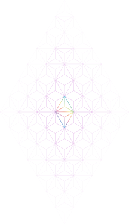

Ethereum in numbers
Where physics meets TPS
11 June 2022
ETHPrague
Péter Szilágyi
Go Ethereum Lead

Detour: The Boring Company
Vegas Loop tunnel
Tunnels are expensive, but must they be?
- Why have an excessive 8.5m diameter?
- Why drill and reinforce in phases?
- Why not near thermal limits?
"Physics is the law, everything else is a recommendation" ~Elon Musk
Back to us: EtHiRUeM DoEs nOT sCaLe
Ethereum is too expensive for me!
- Expensive, or too expensive? Capacity supply vs. demand?
Ethereum can barely do 15-25 TPS!
- ETH send; ERC transfer; DEX swap; NFT auction? How to measure?
Ethereum runs 1.1M gas per second!
- Avalanche C-chain 1.8M, Binance 7M (was 25M too)?! But they're Geth?!
Problem: Throughput is proportional to gas, but gas isn't proportional to load.
Bane of Ethereum: Merkle Patricia trie
👋 Merkle tree containing account data leaves, linked together via 16-child internal nodes. 👋
Catch: The more accounts there are, the deeper the state trie becomes.
Bane of Ethereum: State trie depth
Logarithmic depth surely doesn't matter?
- Ethereum has 174M accounts ⇒ 6.85 internal depth + 1 leaf layer
- Plain transfers update 2 accounts ⇒ 15 new nodes in the account trie
- LevelDB stores data in 7 disk layers ⇒ amplifies at worse into 105 writes
- Old path read for root hash calculation ⇒ bumps to potentially 210 IO ops
- Mined blocks need to propagate ⇒ 210 ops miner side, 210 ops full node side
HDD capped at 80 IOPS ⇒ 0.19 TPS (x2/3 = 0.12 TPS with disk pruning)
SSD (SATA 6) capped at 90.000 IOPS ⇒ 214 TPS (x2/3 = 142 TPS with disk pruning)
SSD (NVMe over PCIe 3) capped at 360.000 IOPS ⇒ 857 TPS (x2/3 = 571 TPS with disk pruning)
SSD (NVMe over PCIe 4) capped at 1.000.000 IOPS ⇒ 2381 TPS (x2/3 = 1587 TPS with disk pruning)
*Purely disk latency bounds, no in-memory optimizations (archive), no caching (small RAM)
Bane of Ethereum: State trie size
To raise the TPS, we must lower the disk IOPS:
- Keep things in memory and avoid hitting the disk
- OS uses free memory as disk cache ⇒ db shuffling in RAM
- Geth does in-memory pruning ⇒ ephemeral state never hits the db
Unfortunately, system memory is limited
- State outgrows the RAM ⇒ db writes revert to physical disk writes
- State becomes bigger ⇒ pruning needs more RAM or it flushes more
Bane of Ethereum: State trie growth
How fast is Ethereum's state growing (5th June, '22 - Sunday)?
- Approximately 0.57 account/s¹, 7.3 storage-slot/s
- Approximately 28.5B/s for accounts, 557B/s for storage ~= 50.6MB/day, 18.5GB/y
Catch: above growth is the pure useful state data
- Account trie weighs ~155.2B/acc, storage tries weigh ~142.3B/slot²
- Trie grows 88.5B/s for accounts, 1038.8B/s for storage ~= 97.4MB/day, 35.6GB/y³
¹+30% according to Etherscan; ²computer said so, maybe lied; ³disregarded log component
What does this all mean?
Ethereum (along with all forks) is on a – potential – death trajectory 😱
- Constant TPS ⇒ state growth ⇒ higher RAM ⇒ more IOPS ⇒ lower TPS ⇒ brick wall
- Mainnet can do a lot more TPS ⇒ brings the brick wall closer
But does the brick wall need to exist?
- EIP-4444: Bound Historical Data in Execution Clients
- EIP-4844: Shard Blob Transactions
- State rent or exponential costs
Thank you

Use the left and right arrow keys or click the left and right
edges of the page to navigate between slides.
(Press 'H' or navigate to hide this message.)